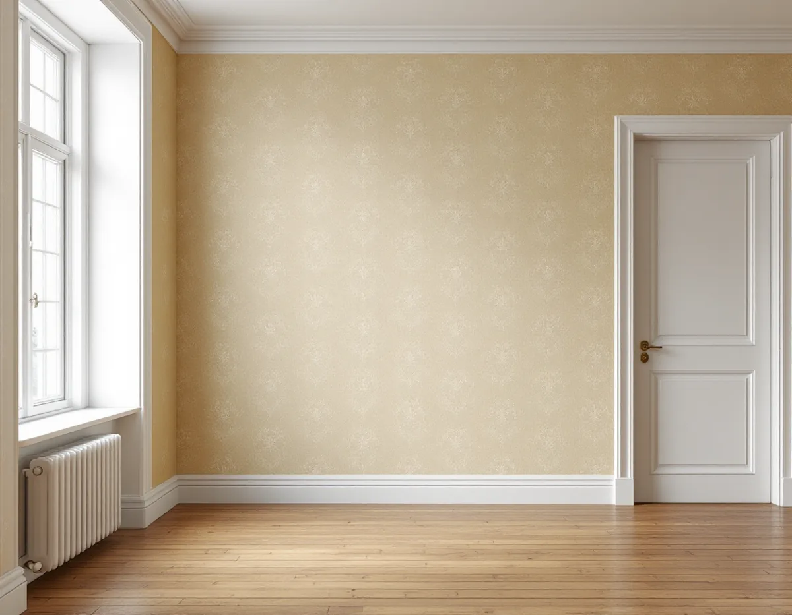
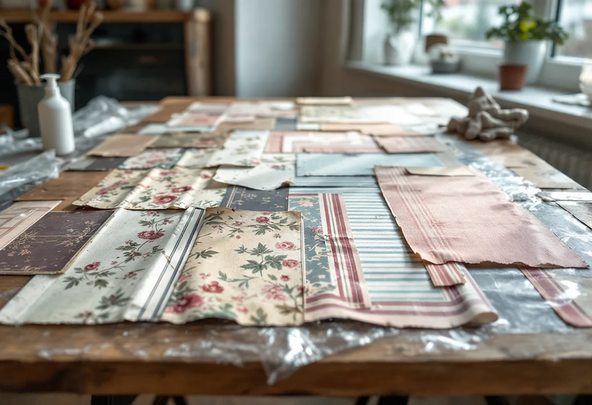

Platsbesök
Vi lyfter en kant där det syns minst och ser hur många lager som sitter på väggen.
I en villa i Brommas trädgårdsstäder eller en småstuga i Olovslund kan väggarna ha fått nya ytskikt många gånger. Innan nästa tapet kommer upp kan det löna sig att ta reda på vad som sitter under, och om något av det ska sparas. Geal Entreprenad AB tapetserar i Brommas villor och radhus och hjälper dig att dokumentera, ta tillvara och ersätta.

Stadens vägledning Varsam utveckling av småhus- och villaområden beskriver hur trädgårdsstäderna i Äppelviken, Ålsten och Smedslätten tillkom på 1920-talet. Södra Ängby blev den sista stadsdelen som planerades efter trädgårdsstadens principer, med modernismens kubiska villor, och vägledningen kallar det ett av Europas största sammanhängande områden av villor från 1930-talet i modernistisk stil.
Samtidigt växte småstugeområdena fram. Pungpinan och Olovslund var först, och 1927 stod de första stugorna klara. Staden upprättade typritningar med utförliga bygginstruktioner, husen byggdes uteslutande i trä, och i slutet av 1970-talet samlade stadsbyggnadskontoret alla typritningar från 1927 till 1957 i en sammanställning för den som ville ändra sin stuga.
Vägledningens tabell markerar trädgårdsstäderna i Bromma, från Nockebyhov till Äppelviken, som kulturhistoriskt värdefulla miljöer, och Södra Ängby, Ålsten, Pungpinan, Olovslund och Norra Ängby är dessutom riksintressen. Om trädgårdsstäderna skriver vägledningen också att många hus har förändrats interiört genom åren. I områdesfakta 2025 har Södra Ängby 549 bostäder, varav 499 i småhus, och Norra Ängby 2 656 bostäder, varav 1 537 i småhus.

Svenska Byggnadsvårdsföreningen kallar tapetlagren en form av kulturlager som kan berätta om husets historia. I ett hus med intressanta kulturhistoriska värden kan många tycka att det är ett ansvar att ta hand om lagren för kommande generationer, men föreningen medger att det är både ett tekniskt och ett antikvariskt dilemma där svaren varierar beroende på vem man frågar.
Tapeter kan också dyka upp där man inte väntar sig dem. Föreningen har beskrivit ett hus där minst sex lager tapet satt med baksidan nedåt i ett innertak. Förklaringen var återbruk: man hade tagit pappen med alla tapetlager från en vägg och spikat upp den i taket som isolering och underlag för målning.
Vårt förslag är därför att ingen vägg i ett äldre Brommahus rivs ner helt innan vi tittat på lagren tillsammans med dig. Ofta räcker det att spara en bit av varje lager, och resten kan tas ner.
Byggnadsvårdsföreningen beskriver ett enkelt sätt att skilja lagren åt: lägg den nedtagna biten i plast och blöt den med vatten, lätta på plasten och blöt igen. Till slut släpper klistret mellan tapeterna, och lagren kan plockas isär även när de är många. Låt dem sedan torka innan de sparas.
Själva trycket säger mycket om åldern. Föreningen förklarar att alla färger i blocktryck faller torrt och inte blöder, medan limtryck är en vått-i-vått-metod. Papperet bleks eller mörknar fort beroende på vad det är gjort av, och det syns tydligast där bottnen inte har tryckts. På baksidan kan det dessutom finnas stämplar med tillverkare och tillverkningsår.
En gammal bit kan bli förlaga till nästa tapet. Byggnadsvårdsföreningen skriver att tapetmakare ofta får i uppdrag att rekonstruera en tapet utifrån ett enda litet välpatinerat fragment, och att tio eller femton lager i ett tapetsjok inte är ovanligt. I en artikel från 1999 hos föreningen beskriver en svensk tapetfabrik att limtrycksmetoden använts industriellt sedan mitten av 1800-talet, och att de som beställer gamla mönster nästan enbart efterfrågar tidstypiska kulörer.
Har du typritningen till en småstuga kan den visa hur huset var planerat från början. Vill du hellre måla än tapetsera, eller gäller frågan fasaden och Brommas lockpanel, slätputs och spån, finns det mer under målare i Bromma.
Vi lyfter en kant där det syns minst och ser hur många lager som sitter på väggen.
Lagren fotograferas, och en bit av varje tas tillvara innan något rivs.
Vi går igenom om en gammal bit ska bli förlaga eller om du vill välja ett nytt mönster.
Nedtagning, underarbete och uppsättning redovisas var för sig.
Lagren tas ner där det behövs, väggen lagas och förlimmas.
Tapeten sätts upp våd för våd, och överbliven tapet lämnas till dig.
Att tapetsera ger rätt till rotavdrag enligt Skatteverket, i villan likaväl som i en bostadsrätt eller ägarlägenhet. I bostadsrätten ska arbetet göras innanför bostadens tak, väggar och golv.
Avdraget är 30 procent av arbetskostnaden, högst 50 000 kr per person och år och högst 75 000 kr tillsammans med rutavdrag. Material som tapet, papp och klister ger inget avdrag, och inte heller resor. Avdraget dras direkt på Geals faktura.
Hur många lager som ska tas ner, om lagren ska dokumenteras och sparas och hur mycket väggen behöver lagas påverkar mest. Efter ett gratis platsbesök får du ett skriftligt kostnadsförslag.
Fasad, fönster och invändig målning.
Målare i Stockholm →Takbyte, takbesiktning och plåtarbeten.
Takläggare i Bromma →Trädgårdsstäder, tegel och funkistak.
Takrenovering i Bromma →Trädgårdsstad, karta och 30 m² inom plan.
Attefallshus i Bromma →Vind, bärande väggar och en andra bostad.
Byggföretag i Bromma →Kulörval och färgtyp i trädgårdsstaden.
Fasadmålning i Bromma →Småspröjs, småstugor och funkis i Bromma.
Fönsterbyte i Bromma →Småstugornas fönster, kitt och linoljefärg.
Fönsterrenovering i Bromma →Slipa furugolvet och behandla med lut och såpa.
Golvslipning i Bromma →Kupor, låga tak och bleck i Bromma.
Plåtslagare i Bromma →Lertegel, småstugor och solceller i Bromma.
Takbyte i Bromma →Trävillor, småstugor och funkisvillor.
Badrumsrenovering i Bromma →Trädgårdsstäder, småstugor och funkis i Bromma.
Fasadrenovering i Bromma →Villor i trädgårdsstäderna och lägenheter i smalhus.
Golvläggare i Bromma →Imkanal, småstugor och trävillor.
Köksrenovering i Bromma →Fasad och interiör i Brommas villastäder.
Målare i Bromma →Verandor, entréer och altaner.
Snickare i Bromma →Småstugor, trädgårdsstad och prickmark.
Tillbyggnad i Bromma →Hela villan i rätt ordning.
Totalrenovering i Bromma →